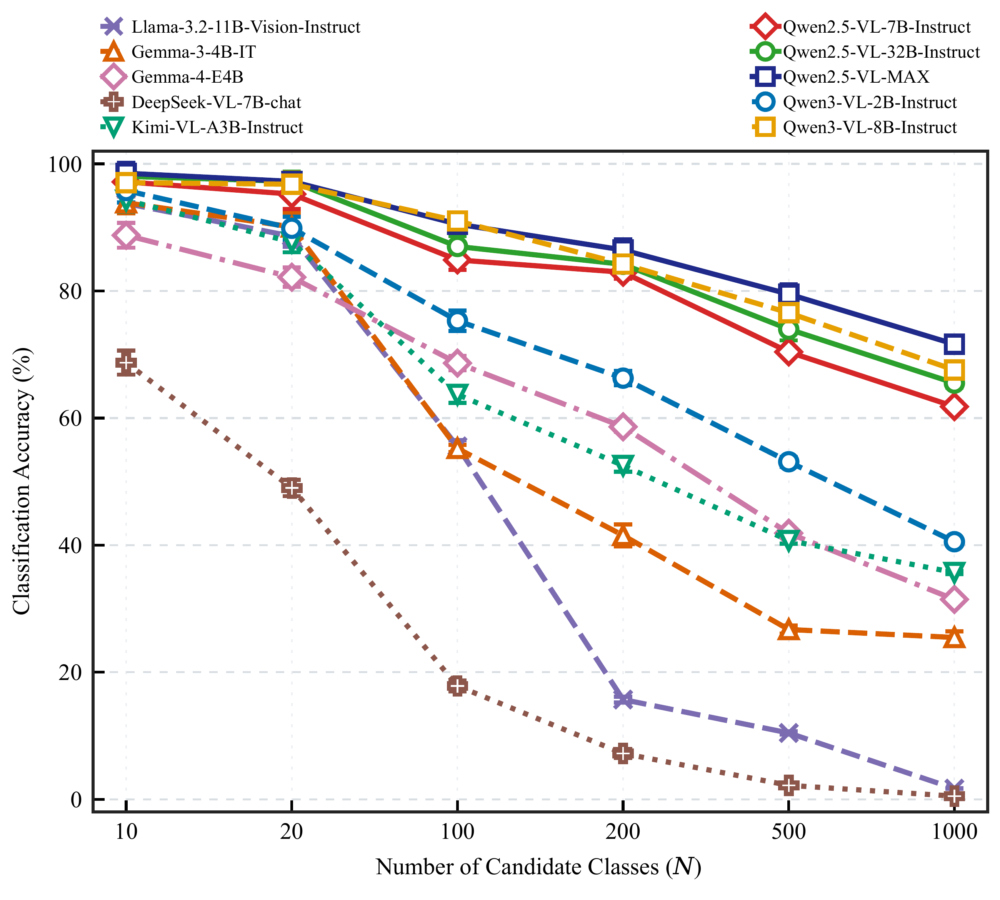
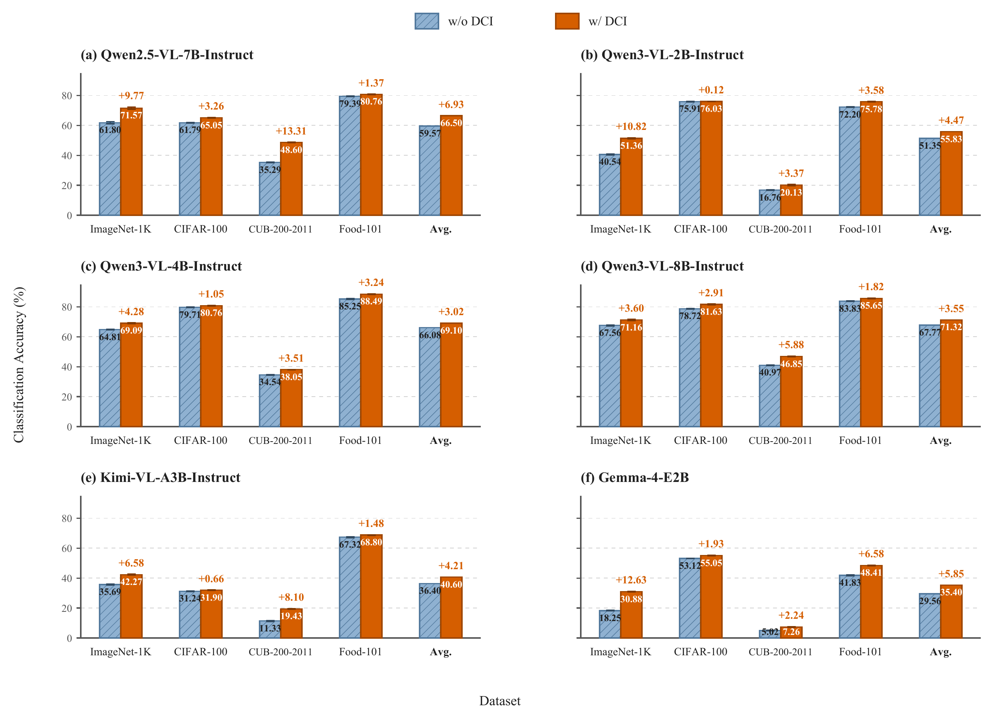
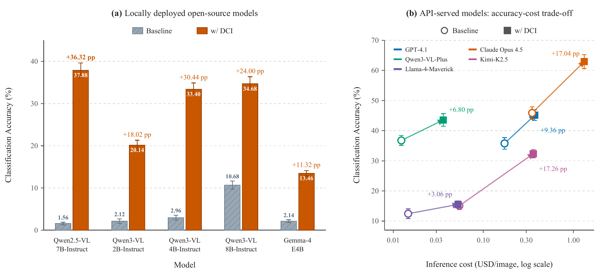
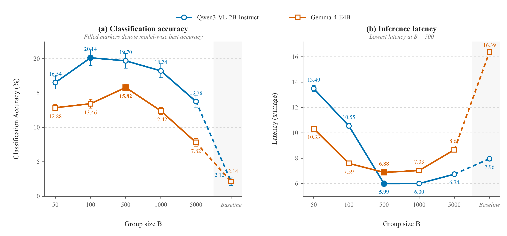
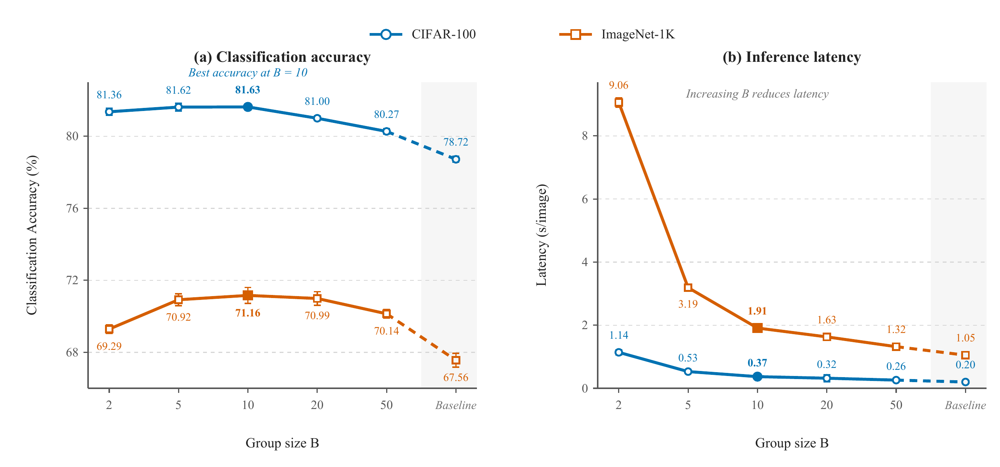
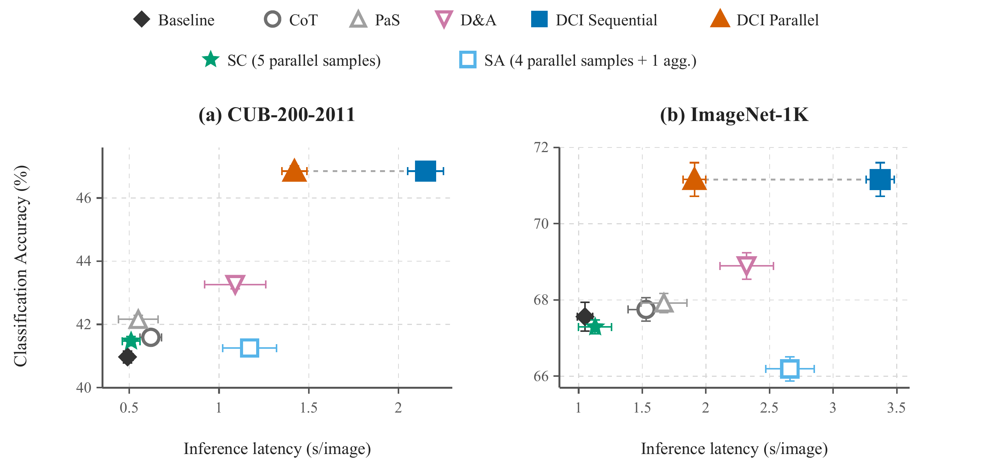
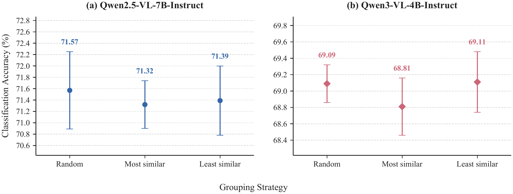
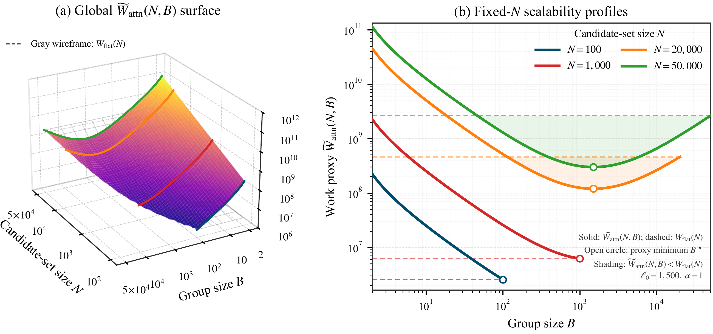
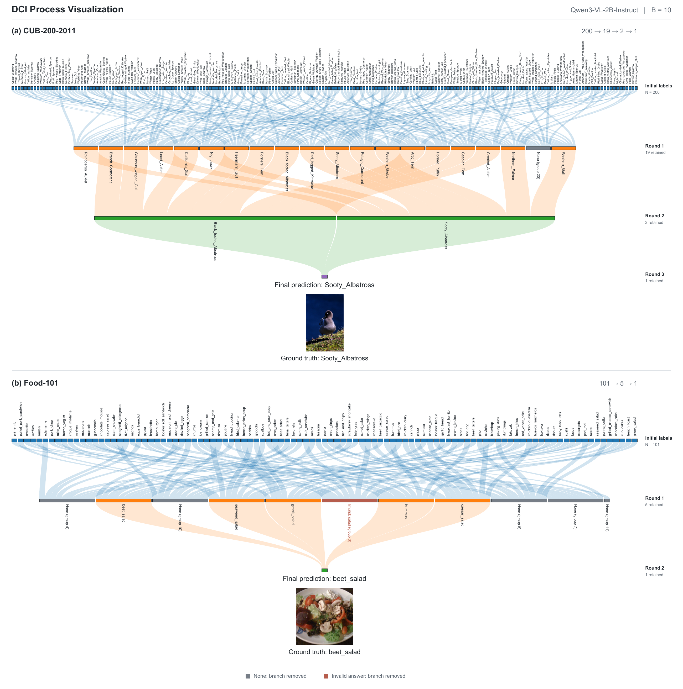

Divide
Randomly partition the active labels into disjoint groups of at most B.
1 Taizhou Institute of Science and Technology, Nanjing University of Science and Technology, China
2 Department of Intelligent Science, Xi’an Jiaotong-Liverpool University, China
3 Department of Computer Science, University of Arizona, USA
* Corresponding author: Feng Jiang
Jiaqi Huang: Jiaqi.Huang26@student.xjtlu.edu.cn
Mean MLLM classification accuracy generally decreases as the candidate label set grows. DCI randomly partitions the candidate space, solves same-level groups in parallel, filters None and invalid responses, and recursively prunes the search space without training.
Multimodal Large Language Models (MLLMs) show strong vision-language capabilities, yet their mean image-classification accuracy generally decreases as the candidate label space expands. We call this empirical pattern candidate-space performance degradation. Evaluations across increasing candidate sizes show similar trends across diverse model families even when prompts remain within their context windows.
DCI is a training-free test-time strategy that partitions a global classification problem into local decisions containing at most B candidates and recursively prunes the candidate space. Across ImageNet-1K, CIFAR-100, CUB-200-2011, Food-101, and a full-vocabulary ImageNet-21K stress test, DCI improves observed mean accuracy in the evaluated model-dataset settings. Selected full-vocabulary settings also reduce measured latency relative to monolithic inference.

Algorithm 1 is implemented with the same prompt and output rule at every level.
Randomly partition the active labels into disjoint groups of at most B.
Query every group independently with the same image, prompt, and frozen MLLM.
Validate complete category names; keep at most one local label and filter None and invalid responses.
Repeat until empty, singleton, or small enough for one final local decision.

None
and invalid responses are filtered. Flat uses a separate closed-set prompt;
DCI retains its None-enabled prompt at every level.
DCI has higher observed mean accuracy in all 24 model-dataset pairs in the main comparison, with a 4.67 percentage-point macro-average gain.



Current summary workbooks and machine-readable values: 2026-09-03 reported-results release. Means and SDs are copied from the reporting workbooks with their correction history; original five-run prediction logs are unavailable.
The best group size is model and deployment dependent; smaller groups simplify local decisions but require more recursive calls.




The paper separates local-call count, computational work, and wall-clock latency. Its squared-attention surface is a proxy, not measured FLOPs.

Two representative examples using Qwen3-VL-2B-Instruct with B = 10.

Candidate subsets for N < 1000 are independently sampled for every run and size, with all 50 ImageNet-1K validation images evaluated per selected class. ImageNet-21K samples 1,000 distinct images uniformly from its available pool in each run.
git clone https://github.com/FourierAI/DCI.git
cd DCI
pip install -e .
dci-eval \
--dataset imagenet1k \
--model Qwen/Qwen3-VL-2B-Instruct \
--image-root /path/to/imagenet/val \
--b-values 10 \
--runs 5Candidate interference and limited long-context utilization are plausible contributors to the observed degradation. DCI can introduce extra latency on smaller label spaces, and its value depends on the deployment budget. The strongest latency claim is limited to selected full-vocabulary ImageNet-21K configurations on the reported hardware.
@misc{ye2026dci,
title = {Divide-and-Conquer Inference for Large-Scale Image Classification with Multimodal Large Language Models},
author = {Zhipeng Ye and Jiaqi Huang and Feng Jiang and Qiufeng Wang and Yikang Duan and Dawei Wang and Kaixin Liu and Hao Li},
year = {2026},
note = {Manuscript under review; source code available at \url{https://github.com/FourierAI/DCI}}
}